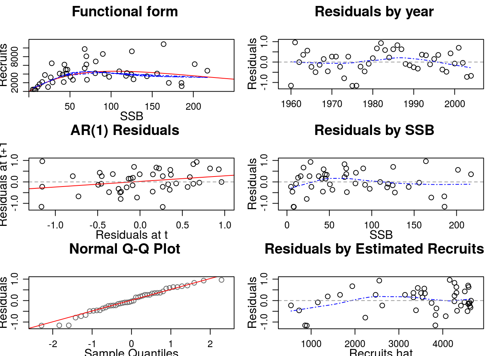

The Fisheries Library in R (FLR) is a collection of tools for quantitative fisheries science, developed in the R language, that facilitates the construction of bio-economic simulation models of fisheries systems.
FLR builds on the powerful R environment and syntax to create a domain-specific language for the quantitative analysis of the expected risks and effects of fisheries management decisions. The classes and methods in FLR consider uncertainty an integral part of our knowledge of fisheries system. […]
To follow this tutorial you should have installed the following packages:
You can do so as follows,
install.packages(c("FLCore"), repos="http://flr-project.org/R")The main classes (i.e. data structures) and methods (i.e. procedures) in the FLR system are found in the FLCore package. Let’s load it first
library(FLCore)so can then inspect an example object
data(ple4)The ple4 object is of class FLStock, used in FLR to represent the representation of the fish population that is constructed from catch and abundance data through an stock assesssment. FLStock is an S4 class (see ?Classes_Details for futher details on S4 classes), consisting of a number of slots able to hold data or results for each of the elements in it. By calling the summary method on the object
summary(ple4)An object of class "FLStock"
Name: Plaice in IV
Description: Imported from a VPA file. ( N:\Projecten\ICES WG\Demersale werkgroep [...]
Quant: age
Dims: age year unit season area iter
10 52 1 1 1 1
Range: min max pgroup minyear maxyear minfbar maxfbar
1 10 10 1957 2008 2 6
catch : [ 1 52 1 1 1 1 ], units = t
catch.n : [ 10 52 1 1 1 1 ], units = 10^3
catch.wt : [ 10 52 1 1 1 1 ], units = kg
discards : [ 1 52 1 1 1 1 ], units = t
discards.n : [ 10 52 1 1 1 1 ], units = 10^3
discards.wt : [ 10 52 1 1 1 1 ], units = kg
landings : [ 1 52 1 1 1 1 ], units = t
landings.n : [ 10 52 1 1 1 1 ], units = 10^3
landings.wt : [ 10 52 1 1 1 1 ], units = kg
stock : [ 1 52 1 1 1 1 ], units = t
stock.n : [ 10 52 1 1 1 1 ], units = 10^3
stock.wt : [ 10 52 1 1 1 1 ], units = kg
m : [ 10 52 1 1 1 1 ], units = m
mat : [ 10 52 1 1 1 1 ], units = NA
harvest : [ 10 52 1 1 1 1 ], units = f
harvest.spwn : [ 10 52 1 1 1 1 ], units = NA
m.spwn : [ 10 52 1 1 1 1 ], units = NA we can inspect the slots, dimensions and structure. Most slots in the class (e.g. catch or stock.n) of themselves of another FLCore class, FLQuant. This class, the basic element used to assemble all other classes in FLR, is an 6-dimensional array that can take advantange of the powerful array algebra capabilities of R. All slots can be accessed and modified using accessors and replacement methods
catch(ple4)An object of class "FLQuant"
, , unit = unique, season = all, area = unique
year
age 1957 1958 1959 1960 1961
all 78423 88240 109238 117138 118331
[ ... 42 years]
year
age 2004 2005 2006 2007 2008
all 117702 111060 121205 90283 96040m(ple4) <- m(ple4) + m(ple4) * 0.5Other standard R methods have also been defined for these classes in a way that is as intuitive as possible for any R user. For example, subsetting using the [ operator works on both FLStock
summary(ple4[, 1:10])An object of class "FLStock"
Name: Plaice in IV
Description: Imported from a VPA file. ( N:\Projecten\ICES WG\Demersale werkgroep [...]
Quant: age
Dims: age year unit season area iter
10 10 1 1 1 1
Range: min max pgroup minyear maxyear minfbar maxfbar
1 10 10 1957 1966 2 6
catch : [ 1 10 1 1 1 1 ], units = t
catch.n : [ 10 10 1 1 1 1 ], units = 10^3
catch.wt : [ 10 10 1 1 1 1 ], units = kg
discards : [ 1 10 1 1 1 1 ], units = t
discards.n : [ 10 10 1 1 1 1 ], units = 10^3
discards.wt : [ 10 10 1 1 1 1 ], units = kg
landings : [ 1 10 1 1 1 1 ], units = t
landings.n : [ 10 10 1 1 1 1 ], units = 10^3
landings.wt : [ 10 10 1 1 1 1 ], units = kg
stock : [ 1 10 1 1 1 1 ], units = t
stock.n : [ 10 10 1 1 1 1 ], units = 10^3
stock.wt : [ 10 10 1 1 1 1 ], units = kg
m : [ 10 10 1 1 1 1 ], units = m
mat : [ 10 10 1 1 1 1 ], units = NA
harvest : [ 10 10 1 1 1 1 ], units = f
harvest.spwn : [ 10 10 1 1 1 1 ], units = NA
m.spwn : [ 10 10 1 1 1 1 ], units = NA and FLQuant
stock.n(ple4)[1,]An object of class "FLQuant"
, , unit = unique, season = all, area = unique
year
age 1957 1958 1959 1960 1961
1 457973 698110 863386 757299 860577
[ ... 42 years]
year
age 2004 2005 2006 2007 2008
1 1159019 714344 820006 949341 844041while ensuring that the result are always valid object of the same class. For example, selecting a single element along the first dimension (age) did not drop that dimension from the object, in contrast with the standard behaviour in R for array.
Similarly to the summary method above, a common set of methods exist for each class to create new objects,
FLQuant(rlnorm(30), dimnames=list(age=0:5, year=2012:2017))An object of class "FLQuant"
An object of class "FLQuant"
, , unit = unique, season = all, area = unique
year
age 2012 2013 2014 2015 2016 2017
0 0.60352 1.51710 1.68515 0.59522 0.15654 0.60352
1 1.93833 6.16351 0.84972 1.43151 4.84358 1.93833
2 0.24826 0.99065 0.61229 5.05653 3.67105 0.24826
3 3.14748 3.13919 0.93561 0.69980 0.88436 3.14748
4 0.97440 5.28007 1.36443 1.19544 0.69089 0.97440
5 2.09946 1.06234 0.53418 0.81529 2.49983 2.09946
units: NA coerce to and from other classes,
head(as.data.frame(ple4))| slot | age | year | unit | season | area | iter | data |
|---|---|---|---|---|---|---|---|
| catch | all | 1957 | unique | all | unique | 1 | 78423 |
| catch | all | 1958 | unique | all | unique | 1 | 88240 |
| catch | all | 1959 | unique | all | unique | 1 | 109238 |
| catch | all | 1960 | unique | all | unique | 1 | 117138 |
| catch | all | 1961 | unique | all | unique | 1 | 118331 |
| catch | all | 1962 | unique | all | unique | 1 | 125272 |
or plot an object
plot(ple4)FLStock plot for ple4
A number of fisheries specific calculations are also available, Figure 1. For example, the estimated spawning stock biomass (SSB), can be obtained from an FLStock object using
ssb(ple4)An object of class "FLQuant"
, , unit = unique, season = all, area = unique
year
age 1957 1958 1959 1960 1961
all 274205 288540 296825 308164 321354
[ ... 42 years]
year
age 2004 2005 2006 2007 2008
all 151508 167531 173783 166061 206480or the mean fishing mortality accross the fully-selected ages (\(\bar{F}\)) with
fbar(ple4)An object of class "FLQuant"
, , unit = unique, season = all, area = unique
year
age 1957 1958 1959 1960 1961
all 0.26857 0.32106 0.36734 0.36796 0.34756
[ ... 42 years]
year
age 2004 2005 2006 2007 2008
all 0.64015 0.62343 0.54764 0.46392 0.35631The S4 classes defined in FLCore all have validity functions defined that limit what changes can be made to an object for it to remain valid. This ensures that methods do not encounter objects that do not have the required dimensions, differ in dimension names, or are not compatible with each other. For example, the validity requirements for the FLQuant class require it
Object validity is checked by the class constructor but also by the replacement methods, for example when calling
catch(ple4) <- landings(ple4) + discards(ple4)A different type of class defined in FLCore is FLSR. This class allows for fitting, exploration and prediction of a stock-recruitment relationship. An example dataset is also available, corresponding to the North Sea herring stock
data(nsher)
summary(nsher)An object of class "FLSR"
Name:
Description:
Quant: age
Dims: age year unit season area iter
1 45 1 1 1 1
Range: min minyear max maxyear
0 1960 0 2004
rec : [ 1 45 1 1 1 1 ], units = 10^3
ssb : [ 1 45 1 1 1 1 ], units = t*10^3
residuals : [ 1 45 1 1 1 1 ], units = NA
fitted : [ 1 45 1 1 1 1 ], units = 10^3
Model: rec ~ a * ssb * exp(-b * ssb)
<environment: 0x9c183e8>
Parameters:
params
iter a b
1 119.4 0.009451
Log-likelihood: 15.862(0)
Variance-covariance:
a b
a 255.33882 1.809e-02
b 0.01809 1.993e-06The class holds together FLQuant slots for inputs (rec for recruitment in numbers and ssb for spawning stock biomass or any other proxy of stock reproductive potential) and outputs of the fit (fitted for the estimated recruitment, and residuals, the log residuals of the estimates). It also contains the necessary elements for the model fit to be carried out using maximum likelihood estimation:
logl: a function that computes the log-likehood to be passed on to optim.model: a formula to calculate the estimated recruitment.initial: a function to obtain initial parameter values for the minimization algorithm.By calling the method that carries out the minimization, fmle, we obtain a new object in which the results of the fit are now available
params: the estimated parameterslogLik: the log-likelihood and degrees of freedomcovar: the variance-covariance matrix of the fithessian: the Hessian matrix of the fitas well as some other information returned by the fitting procedure.
Of course we can visualize the result of the model fit, together with an useful set of diagnostics, by simply calling
plot(nsher)
L. T. Kell, I. Mosqueira, P. Grosjean, J-M. Fromentin, D. Garcia, R. Hillary, E. Jardim, S. Mardle, M. A. Pastoors, J. J. Poos, F. Scott, R. D. Scott; FLR: an open-source framework for the evaluation and development of management strategies. ICES J Mar Sci 2007; 64 (4): 640-646. doi: 10.1093/icesjms/fsm012
This document is licensed under the Creative Commons Attribution-ShareAlike 4.0 International license.